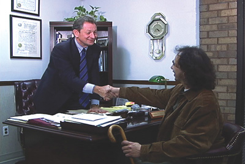

The Law Offices of Sullivan & Kehoe, LLP was formed in 2002 when Michael T. Sullivan and Francis Kehoe merged their practices. At the time, both attorneys were concentrating their practices in Social Security Disability law and decided to pool their collective experience and knowledge, as well as resources, to gain competitive advantages. With over 25 years of experience between the partners, the firm has offices in New York, Mineola, Kings Park and Riverhead.
As a firm that concentrates its practice in Social Security law, they will be pleased to provide you with a free consultation. As a firm committed to keeping their clients informed of the often lengthy process involved in pursuing these benefits, they will provide you with ongoing updates as to the progress of claims. Further, considering that many clients find it difficult to travel, they have several offices in convenient locations on Long Island and in New York City.
Attorney Fees
The Law Firm of Sullivan & Kehoe, LLP handles Social Security Disability cases on a contingency basis and are paid only if they are successful in obtaining benefits on your behalf. Fees must be approved by a judge and are withheld from retroactive benefits. Fees are limited to no more than 25% of the lump sum that you receive. Future benefits are not affected by attorney fees.
Attorney Referrals
The firm welcomes attorney referrals and is committed to keeping both the referring attorney and the client fully informed of the often lengthy process of pursuing Social Security disability benefits.
